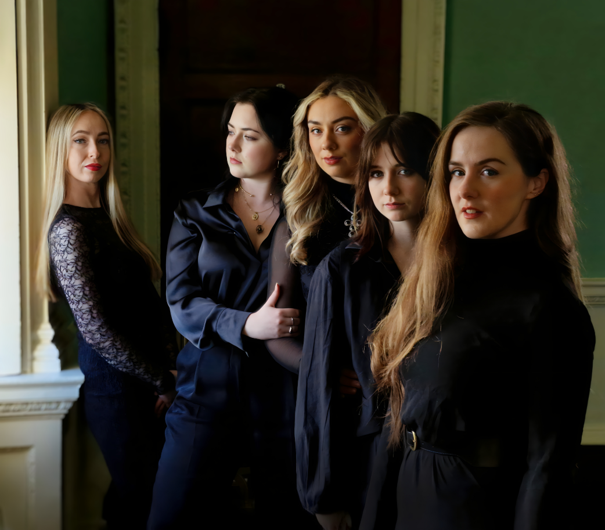

Members
Performers and collaborators
A flexible ensemble of voices, artists, and collaborators connected through SYSTIR’s performance world.
Explore individual performer profiles and discover the voices that shape SYSTIR on stage, in recording, and across the wider ANÚNA Collective.
Individual profiles
Performers and collaborators
Individual performers and collaborators from the SYSTIR ensemble and the wider ANÚNA Collective.
Ensemble structure
A flexible collective of voices
SYSTIR’s stage formation may vary depending on performance context, repertoire, and collaboration. This page can become the central directory for current performers, guest artists, and creative collaborators.
As the site develops, each member profile can include biographical details, performance credits, featured media, and links to related projects.
Explore media archive
Bookings and enquiries
Interested in SYSTIR’s performers?
For programming, press, collaboration, and booking enquiries, contact the ensemble directly.